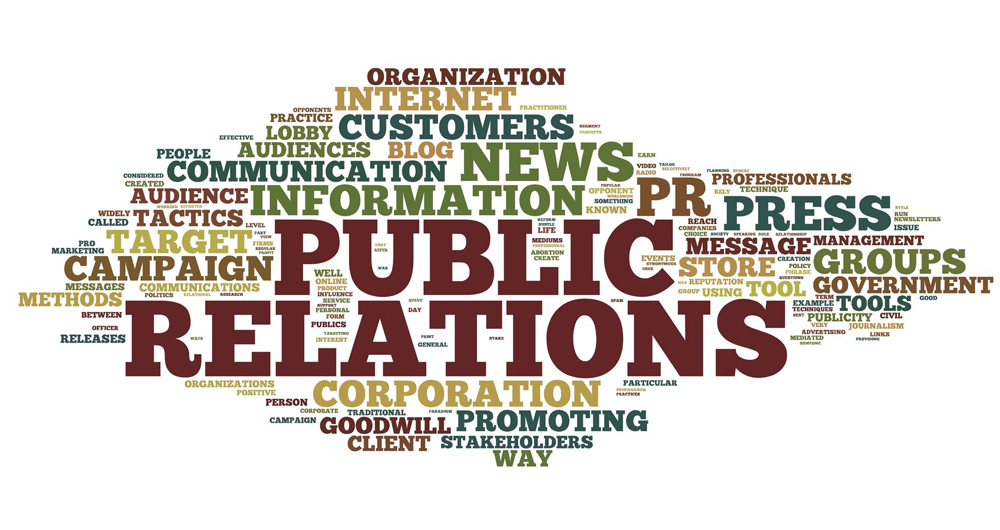

Реклама и связи с общественностью

Обзор ресурсов интернет
выполняли студенты первого курса гуманитарного факультета:
- Вартанова Анастасия
- Усач Мария
- Журавлева Елизавета
- Борисова Василиса
Актуальность темы
Актуальность темы "Реклама и связи с общественностью" обусловлена стремительной эволюцией медиа индустрии, где традиционные и цифровые форматы взаимодействуют и дополняют друг друга. В условиях глобализации и активного развития социальных сетей грамотная реклама и эффективные связи с общественностью становятся ключевыми факторами успеха для бизнеса и организаций. Интернет предоставляет широкие возможности для получения актуальной информации, новейших исследовательских материалов, профессиональных тренингов и общения с экспертами в данной области.
Образовательные платформы и курсы
- Coursera - платформа предлагает онлайн-курсы по рекламе и PR от ведущих университетов и компаний.
- edX - еще одна платформа для онлайн-обучения, предлагающая курсы по маркетингу, рекламе и PR от мировых университетов, с сертификатами по завершению.
Профессиональные сообщества и ассоциации
Блоги и исследования
- AdWeek - ресурс, посвященный всем аспектам рекламы, от креативных кампаний до аналитики. Обширный контент, включая статьи, блоги и исследования.
- HubSpot Blog - блог о маркетинге и продажах с полезными статьями, гайдами и ресурсами по рекламе и PR.
Инструменты и аналитика
- Google Analytics - бесплатный инструмент для анализа веб-трафика. Помогает понимать, как рекламные кампании влияют на поведение пользователей.
- Hootsuite - платформа для управления социальными медиа, позволяющая отслеживать и анализировать эффективность рекламных кампаний в соцсетях.
Новостные сайты и публикации
- MarketingProfs - предоставляет последние новости, исследования и статьи по маркетингу, рекламе и связям с общественностью.
- PR News - платформа, посвящённая новостям в области PR, предлагает статьи, советы и ресурсы для профессионалов.